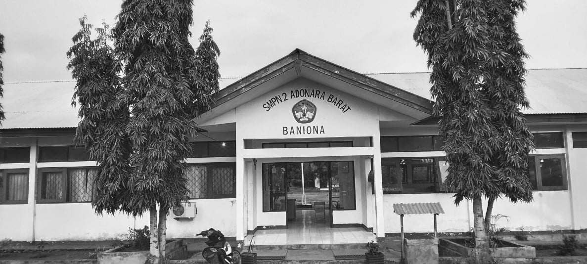

Offline Website Maker
SMP Negeri 2 Adonara Barat merupakan salah satu sekolah menengah pertama negeri yang berlokasi di Desa Klukengnuking, Kecamatan Wotan Ulumado, Kabupaten Flores Timur, Provinsi Nusa Tenggara Timur. Sekolah ini didirikan berdasarkan Surat Keputusan Menteri Pendidikan dan Kebudayaan Nomor 001a/O/1999 tertanggal 5 Januari 1999. Sejak saat itu, sekolah ini telah berkomitmen untuk memberikan pendidikan berkualitas kepada para siswanya.Pada tahun 2014, SMP Negeri 2 Adonara Barat memperoleh akreditasi "B", yang menunjukkan bahwa sekolah ini memenuhi standar nasional dalam penyelenggaraan pendidikan. Sekolah ini berada di bawah naungan Pemerintah Daerah dan memiliki luas tanah sekitar 30.220 meter persegi, yang memungkinkan pengembangan fasilitas dan kegiatan belajar-mengajar yang optimal.Dengan sistem penyelenggaraan pendidikan pagi selama 6 hari dalam seminggu, SMP Negeri 2 Adonara Barat terus berupaya mencetak generasi penerus bangsa yang cerdas, berakhlak mulia, dan siap menghadapi tantangan masa depan.
Offline Website Maker